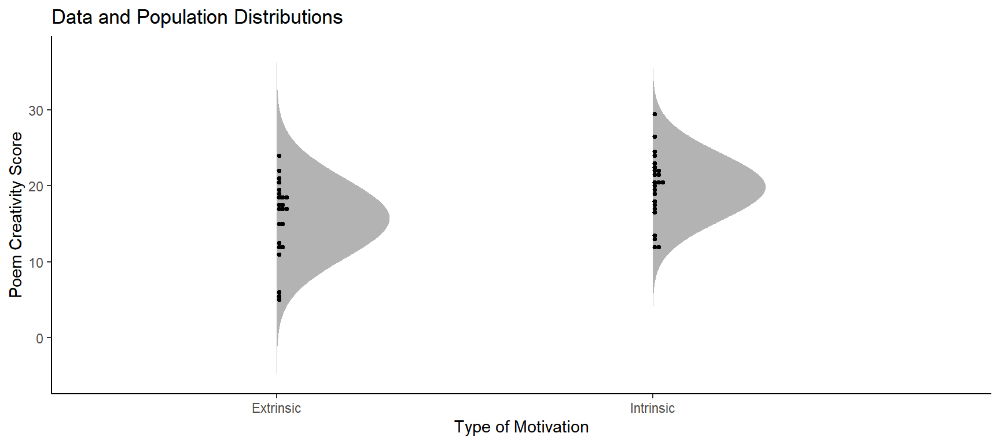
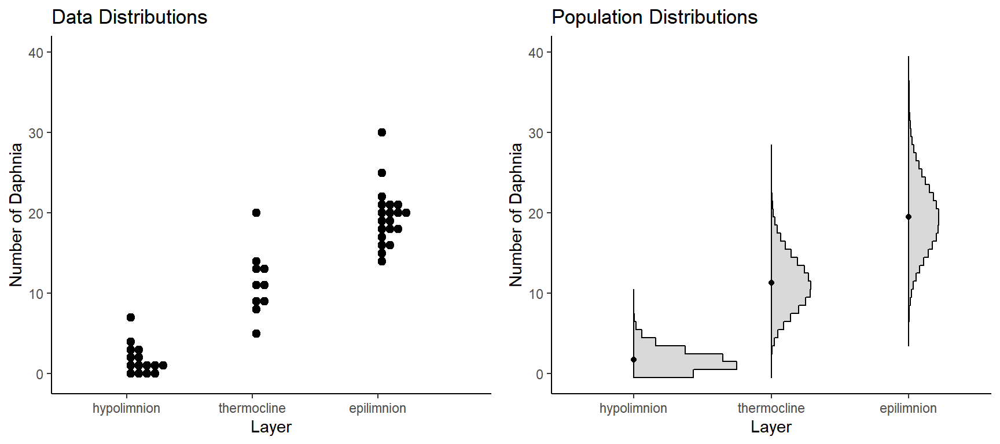
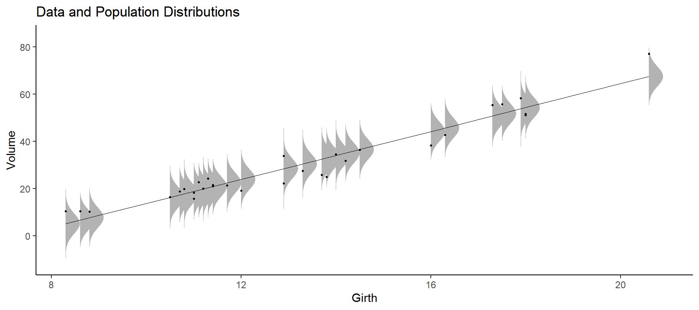
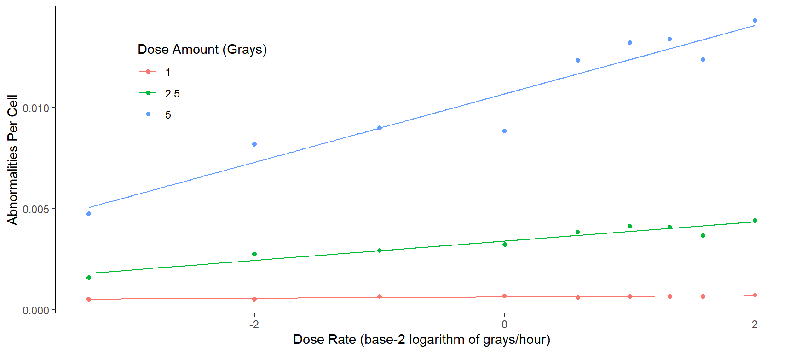
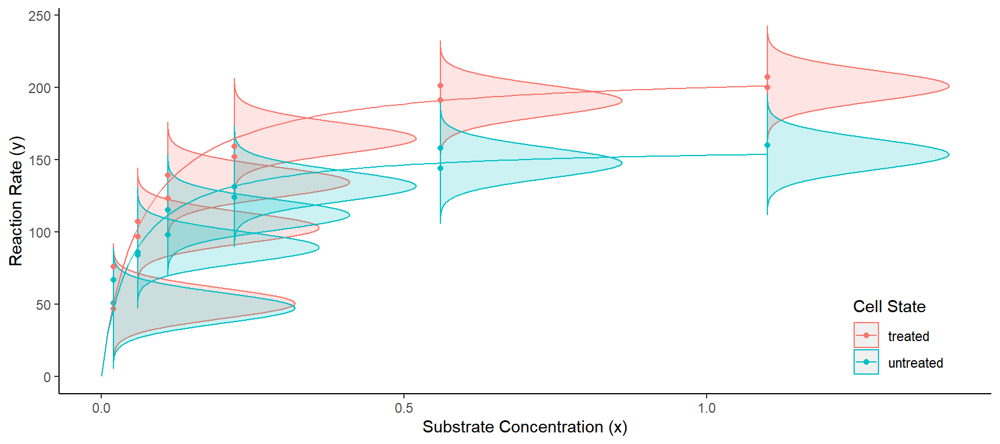
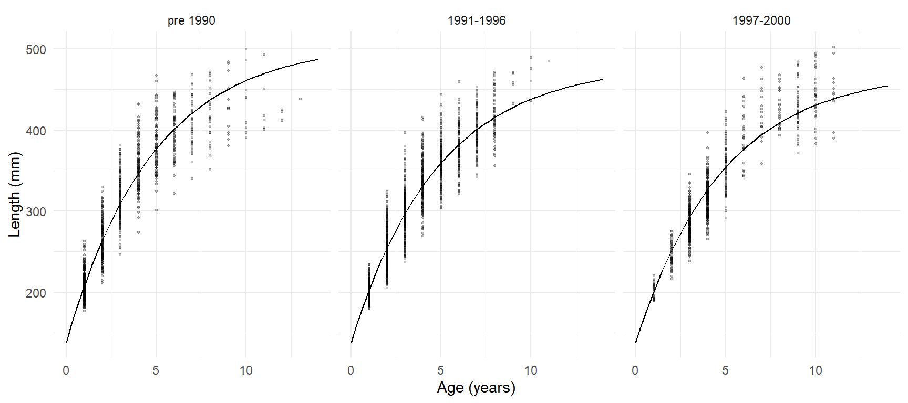
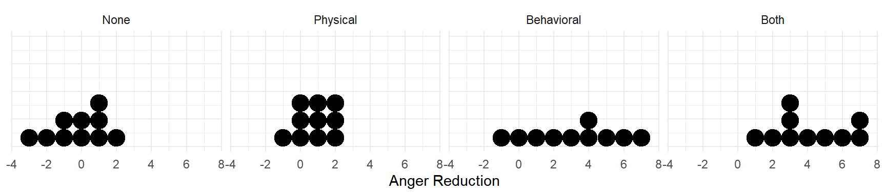

You can also download a PDF copy of this lecture.



The linear regression model has the form \[ \mu_y = \alpha + \beta x, \] where \(\mu_y\) is the mean of the population distribution of the response variable \(y\) (e.g., mean tree volume), and \(x\) is the value of the explanatory variable (e.g., tree girth). The quantities \(\alpha\) and \(\beta\) are the intercept and slope parameters, respectively.
Study Question: What do the four symbols in \(\mu_y = \alpha + \beta x\) represent?
Example: The plot below shows the data from a study of the relationship between the number of chromosomal abnormalities per cell (\(\mu_y\)) and the rate of exposure to gamma radiation (\(x\)). But this relationship was studied at three different total dose amounts. Three linear regression models are used here. 
The multiple linear regression model has the form \[ \mu_y = \alpha + \beta_1 x_1 + \beta_2 x_2 + \cdots + \beta_k x_k \] where \(x_1, x_2, \dots x_k\) are the values of \(k\) explanatory variables. For example, we might have \[ \mu_y = \alpha + \beta_1 x_1 + \beta_2 x_2 \] where \(\mu_y\) is the mean of the population distribution of the response variable \(y\) (e.g., mean tree volume), \(x_1\) is the value of one explanatory variable (e.g., tree girth), and \(x_2\) is the value of a second explanatory variable (e.g., tree height).
The generic term linear regression is usually used to refer to the case where there is one or more explanatory variables. The case where there is only one explanatory variable is sometimes referred to as simple linear regression.
Study Question: How is multiple linear regression different from simple linear regression?
A nonlinear regression model is any regression model that cannot be written as \[ \mu_y = \alpha + \beta x \] or \[ \mu_y = \alpha + \beta_1 x_1 + \beta_2 x_2 + \cdots + \beta_k x_k. \]
Study Question: What is nonlinear regression?
Example: In biochemistry, the relationship between the mean reaction rate (\(\mu_y\)) and the concentration of a substrate (\(x\)) is often modeled as \[ \mu_y = \frac{\delta x}{\gamma + x}. \] Here \(\delta\) is the maximum achievable mean reaction rate, and \(\gamma\) is the substrate concentration that yields a mean reaction rate half way between 0 and \(\delta\). 
Example: In fisheries science, a nonlinear regression model (the von Bertalanffy model) is used to model the relationship between mean length (\(\mu_y\)) and age (\(x\)) of fish. This model can be written as \[ \mu_y = \alpha + (\delta - \alpha)e^{-x\log(2)/\gamma}. \] Here \(\alpha\) is the maximum value of \(\mu_y\) that we approach as fish age, \(\delta\) is the value of \(\mu_y\) before they reach one year of age, and \(\gamma\) is how many years it takes for \(\mu_y\) to be half way between \(\delta\) and \(\alpha\). 
What if we have one or more categorical explanatory variables? Regression can accommodate categorical explanatory variables using some tricks. But often the statistical methodology is described as the analysis of variance (ANOVA).
Example: The dot plots below show four samples of observations of the variable anger reduction. The four samples correspond to four levels of a categorical treatment variable of anger management exercises (none, physical, behavioral, and both physical and behavioral).  Here are some descriptive statistics for each group.| Group | n | mean | sd |
|---|---|---|---|
| None | 10 | -0.2 | 1.5 |
| Physical | 10 | 0.8 | 1.0 |
| Behavioral | 10 | 3.1 | 2.6 |
| Both | 10 | 4.1 | 2.1 |
Possible research questions to address using statistical inference:
| warning | period | n | mean | sd |
|---|---|---|---|---|
| yes | before | 1400 | 36.5 | 6.0 |
| yes | short | 1400 | 35.8 | 6.1 |
| yes | long | 1362 | 37.7 | 6.4 |
| no | before | 1400 | 38.2 | 6.6 |
| no | short | 1400 | 39.2 | 6.8 |
| no | long | 1475 | 39.5 | 6.4 |
Possible research questions to address using statistical inference:
Study Question: When would a researcher use an analysis of variance?